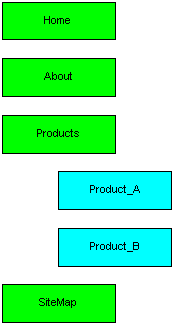

Let op: Je zult merken dat in de deelopdrachten verder gewerkt wordt op basis van eerdere deelopdrachten. Plaats daarom iedere deelopdracht in een eigen submap, zodat alle deelopdrachten los te bekijken zijn.
Let ook op: Vanaf deze week zullen we ook meer aandacht gaan besteden aan de opbouw van de code: netheid, layout, commentaar, enz. Wen jezelf aan om meteen vanaf het begin een standaard te benoemen en te gebruiken.
In het onderstaande plaatje zie je de simpele
sitemap van MyCompany weergegeven: totaal 6 pagina's waarvan 4 op
het 1e niveau (de groene blokjes) en 2 en op het 2e niveau (de blauwe
blokjes).

Binnen de site van MyCompany kun je als volgt navigeren:
==> Als je op een pagina van het 1e niveau bent, kun je altijd
naar alle andere pagina's van het 1e niveau
==> Als je op een pagina van het 2e niveau bent, kun je altijd
naar alle andere pagina's van het 2e niveau die tot hetzelfde
1e niveau horen
==> Als je op een pagina van het 2e niveau bent, kun je altijd
terug naar de bijbehorende pagina van het 1e niveau
==>Vanuit de sitemap-pagina kun je naar alle pagina's
Maak nu een setje van 6 pagina's waarin de bovenstaande
navigatieregels geïmplementeerd zijn. Geef de pagina's
dezelfde namen als in de afbeelding te zien zijn (gevolgd door .html).
Het navigeren doe je door tekstuele hyperlinks te maken in de
betreffende pagina (dus nog geen plaatjes gebruiken, dat komt later).
Plaats de hyperlinks steeds in een ongenummerde lijst die het niveau
van de pagina weergeeft.
Zet ook in iedere pagina een titel waaruit blijkt op welke pagina je
bent; de titel moet qua lettergrootte overeenkomen met het niveau
van de pagina, dus H1 op niveau 1 en H2 op niveau 2.
Deze opdracht is identiek aan opdracht 2.1, maar nu pas je alleen de sitemap-pagina zodanig aan, dat daar geen tekstuele links meer in staan, maar je gebruikt het bovenstaande plaatje als imagemap. Het plaatje moet een geheel blijven; dus niet in stuken knippen. Je moet in de diverse blokjes kunnen klikken en dan naar de goede pagina springen. Laat ook een informatieve tooltip zien als je met de muis boven een blokje komt.
We bouwen nu verder op opdracht 2.2.
Zoek op het web naar 2 mooie productplaatjes, één in
GIF- of PNG-indeling en 1 één JPG. Zorg ervoor dat de links in de
Products-pagina nu niet meer tekstueel zijn, maar dat ze grafisch
worden m.b.v. deze plaatjes die in een formaat van ongeveer 15000 pixels (bijvoorbeeld 150x100)
getoond worden zonder randje erom heen.
In de betreffende ProductX-pagina laat je de complete foto van het
product zien, en bovendien neem je een fatsoenlijke omschrijving van
het product op, met minstens 5 eigenschappen (die je natuurlijk in
een lijstje laat zien) en verder een uitgebreide omschrijving.
Zorg er voor dat het plaatje van het product aan de rechterkant van
de betreffende product-pagina getoond wordt en dat de tekst links van
het plaatje staat. Daarnaast dien je ervoor te zorgen dat het plaatje
zo optimaal mogelijk geladen wordt.
Tenslotte bedenk je een andere manier om binnen deze
product-pagina's te navigeren. Deze mag nog wel tekstueel zijn,
maar moet wel goed bereikbaar zijn binnen de pagina en mag niet
storend in beeld zijn.
Let er tenslotte op dat aanhalingstekens en sommige andere tekens in de tekst vervangen
worden door entiteiten (&code;).
Probeer nu eens, werkend vanuit opdracht 2.3,
in de beide ProductX-pagina's ervoor te zorgen dat de lijstjes
met (minstens) 5 eigenschappen niet van een standaard opsommingsteken
voorzien zijn , maar van een door jezelf gezocht tekentje. Gebruik
voor beide pagina's een apart tekentje.
NB: je moet het doen met de HTML-tags die we tot nu toe bekeken
hebben, dus nog geen CSS.
Als laatste deelopdracht krijg je de beschikking over een Word document (wk2_tekst.doc), dat een kort verhaaltje vertelt over de geschiendenis van F1-racing in Canada. Maak hier een netjes uitziende HTML-pagina van. Netjes qua uiterlijk in de webbrowser en netjes qua HTML-code, zonder tags die we tot nu toe niet bekeken hebben in de les of het webdictaat.
Zorg ervoor dat je aan het begin van het volgende practicum deze opdrachten klaar hebt en dat jullie ze meteen kunnen laten zien en kunnen toelichten.
SPIJ20100906b